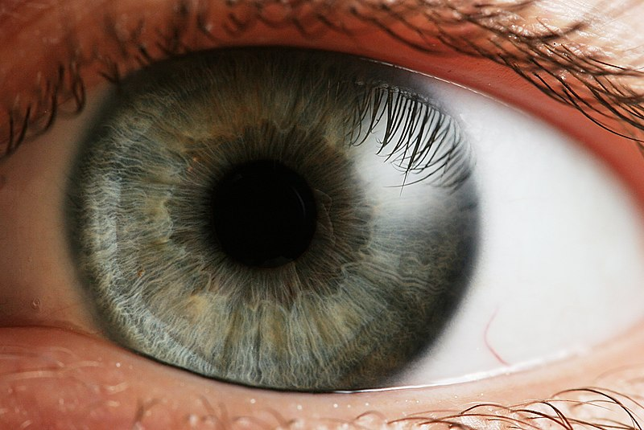

")
Iris is a genus of 260–300 species of flowering plants with showy flowers. It takes its name from the Greek word for a rainbow, which is also the name for the Greek goddess of the rainbow, Iris. Some authors state that the name refers to the wide variety of flower colors found among the many species. As well as being the scientific name, iris is also widely used as a common name for all Iris species, as well as some belonging to other closely related genera. A common name for some species is 'flags', while the plants of the subgenus Scorpiris are widely known as 'junos', particularly in horticulture. It is a popular garden flower.
The often-segregated, monotypic genera Belamcanda (blackberry lily, I. domestica), Hermodactylus (snake's head iris, I. tuberosa), and Pardanthopsis (vesper iris, I. dichotoma) are currently included in Iris.
In humans and most mammals and birds, the iris (plural: irides or irises) is a thin, annular structure in the eye, responsible for controlling the diameter and size of the pupil, thus the amount of light reaching the retina. Eye color is defined by that of the iris. In optical terms, the pupil is the eye's aperture, while the iris is the diaphragm.
The iris consists of two layers: the front pigmented fibrovascular layer known as a stroma and, beneath the stroma, pigmented epithelial cells.
The stroma is connected to a sphincter muscle (sphincter pupillae), which contracts the pupil in a circular motion, and a set of dilator muscles (dilator pupillae), which pull the iris radially to enlarge the pupil, pulling it in folds.
The sphincter pupillae is the opposing muscle of the dilator pupillae. The pupil's diameter, and thus the inner border of the iris, changes size when constricting or dilating. The outer border of the iris does not change size. The constricting muscle is located on the inner border.